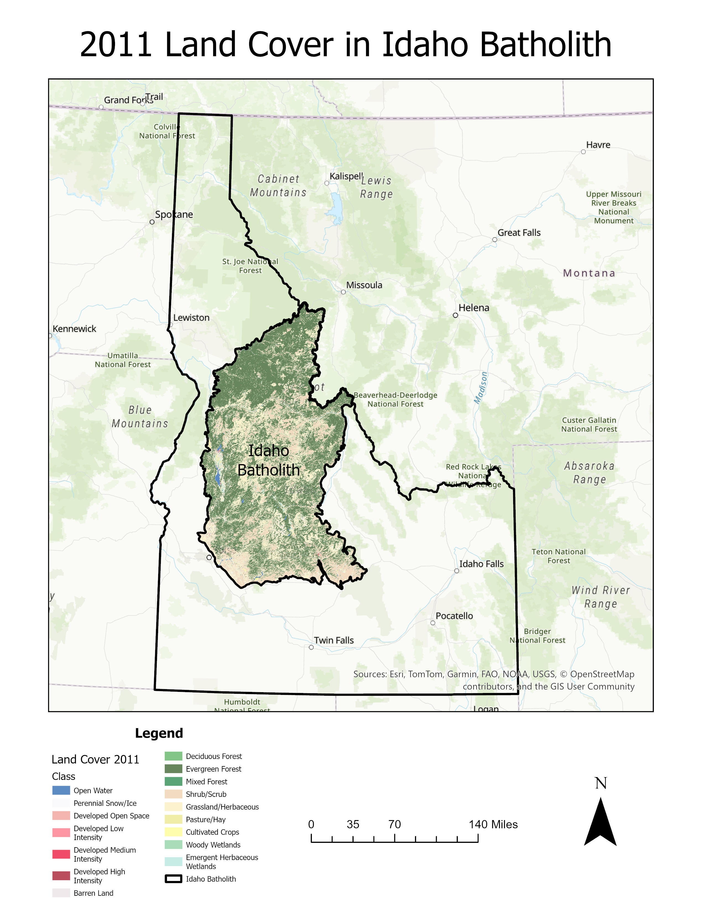

Idaho Batholith Land Cover Change & Disturbance Analysis
ArcGIS Pro • NLCD • Raster Analysis • Change Detection
Project Overview
This project evaluated land-cover change within the Idaho Batholith ecoregion between 2011 and 2024. The analysis focused on identifying which land-cover classes experienced the greatest increases and decreases and whether observed vegetation transitions were consistent with wildfire disturbance and ecological succession.
Methods
National Land Cover Database (NLCD) rasters from 2011 and 2024 were projected into a common coordinate system and clipped to the Idaho Batholith Level III Ecoregion in ArcGIS Pro. Land-cover statistics were calculated for each class to determine net area and percent change between the two years.
The ArcGIS Pro Combine tool was used to overlay the 2011 and 2024 classifications and identify pixel-level transitions between vegetation classes. Major transitions were then summarized to evaluate disturbance and recovery patterns across the study area.
2011 Land Cover

2024 Land Cover
Land Cover Change: 2011–2024

Key Results
- Evergreen forest decreased by approximately 3,532 km², representing a 12.0% decline.
- Shrub/scrub increased by approximately 5,482 km², representing a 35.9% increase.
- Grassland/herbaceous vegetation decreased by approximately 1,978 km², or 22.1%.
- The largest vegetation transition was grassland/herbaceous to shrub/scrub, totaling approximately 4,755.5 km².
- Evergreen forest to shrub/scrub accounted for approximately 3,081.8 km² of transition.
- Land-cover change occurred in distinct clusters, while large portions of the ecoregion remained unchanged.
Interpretation
The dominant pattern was a decline in evergreen forest accompanied by shrub expansion and localized forest regeneration. Forest-to-shrub and forest-to-grassland transitions were consistent with disturbance patterns associated with wildfire, while shrub-to-forest transitions indicated localized vegetation recovery and ecological succession.
Limitations & Future Work
This analysis compared two NLCD time periods and therefore did not capture annual vegetation changes or individual disturbance events. Future analysis could incorporate MTBS burn-severity data, annual Landsat imagery, and climate observations to more directly evaluate relationships between wildfire, climate variability, and vegetation recovery.
Skills Demonstrated
ArcGIS Pro, raster processing, NLCD analysis, change detection, reclassification, raster overlay, spatial data management, area calculations, cartographic design, ecological interpretation, and environmental GIS.